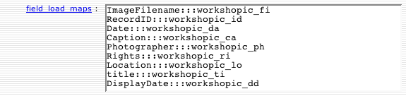
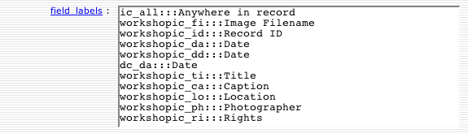
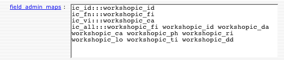
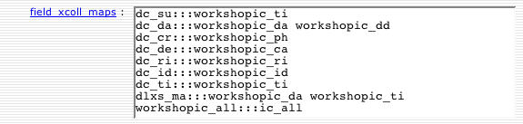
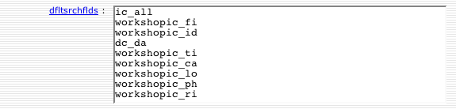
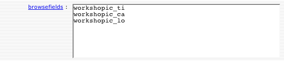

Image Class Instructor: Roger Espinosa
If you have questions, please address them to dlxs-help@umich.edu.
This portion of the DLXS Workshop focuses on implementing a collection in the Image Class. It is organized as a hands-on lesson, with the entire process outlined in detail. All of the steps are included so that it can be repeated or used as a guide later. Links to the detailed Image Class documentation are included. Check out the database of UM Campus Photos that we'll be working with in the workshop.
A printed copy of this document will be available at the workshop.
In the Image Class Content Prep portion of the workshop we work with some new images and descriptive data, adding them to an existing image database. We will generate JPEG2000 images and put them in place on the server.
In this workshop we are working with a collection that already exists. However if it were a new collection it would be necessary to choose a collection identifier, and enable web access to the collid. When choosing a collid, it helps to keep it short and to keep in mind that it should be unique, not just within Image Class, but across all of the classes. Consider including a consistent class specific ending on each collid to help avoid conflicts. For example, workshopic is the collid for the collection that will be used in this lesson.
Managing access to collections will be covered elsewhere in the workshop, since it applies to all DLXS Classes.
Each collection has a record in the Collection Database that holds collection specific configuration information. A collection's record is used by the middleware, and in the case of Image Class, by the scripts used to load data. The Collection Manager (CollMgr) is a web based interface to the Collection Database that provides functionality for editing each collection's record. Collection Database records can be checked-out for editing, checked-in for testing, and released to production. In general, a new collection needs to have a CollMgr record created from scratch before the middleware can be used.
A Collection Database record for workshopic has already been created. Take a look at the record to become familiar with it.
http://yourworkshopid.ws.umdl.umich.edu/cgi/c/collmgr/collmgr
Images, in general need to be converted to a format suitable to use on the web. Image Class supports a couple of special formats that allow for enhanced functionality (zooming), MrSID and JPEG2000. Image Class provides tools for generating JPEG2000 files, but does not provide tools for managing the workflow of converting master image files to web formats.
$DLXSROOT/bin/i/image/mediaprep c=workshopic
In this part, descriptive info for the new images will be added to the database. FileMaker Pro will be used to edit the database. FileMaker Pro is a useful tool for preparing data for Image Class, though other tools can be used instead.
Each participant will do this work on their own machine.
A good convention for naming collection's data file is collid-data.fp7 (e.g. workshopic-data.fp7).
Import the descriptive data for the new images in to the existing database. New records will be created for each. The database is setup to create record ID numbers and some other information automatically.

A set of scripts specifically for loading data are provided with Image Class.
Provided a set of data records, the scripts load the data into a pair of MySQL tables, known generically as "data" and "media".
We need to configure the collection so the scripts know which fields to load and how to put them to use for unique record identification, media file linking, searching, sorting and display.
Configuration information is stored in the Collection Database and entered using the CollMgr web interface. The following fields must be configured.
Collmgr field: field_load_maps
field_load_maps holds the list of fields from the source data to be loaded into Image Class MySQL tables. The fields are optionally mapped to abbreviations. Abbreviations are defined in field_load_maps and once established must be used everywhere the field is referenced. Three colons ":::" separate the original field name and the abbreviation.
DisplayDate (workshopic_dd) does not actually exist in the FileMaker table. DisplayDate is created during the preload process in a special subclass of Perl code used to modify the data as a repeatable part of loading.

Collmgr field: field_labels
field_labels holds the list of abbreviations mapped to thelabels to be used for display in Image Class. This sometimes will be a reverse mapping of field_load_maps, but often the labels differ from the original field names may not have been created with public use in mind. Field labels are not needed to load data, but no time like the present to get this done.
workshop_da (Date) and workshop_dd (DisplayDate) share the same label, "Date". workshop_da is used for sorting, and appears in the sort menu as "Date". The value of the workshop_dd field is used for when the record is displayed. It also is labeled as "Date". To the user the difference is transparent, but functionally the difference in the system is significant.
dc_da is a cross collection field (more on this soon enough) also used at the collection level therefore it needs a label assigned. It appears to the user in the search form as "Date". dc_da allows the user to search both forms of the date field when searching.

Collmgr field: admin_field_maps
admin_field_maps holds the "administrative" mappings used to mark the record identifer field, image filename fields, and other mission critical fields that facilitate the loading of data. The most commonly used mappings are for record IDs (ic_id), image filenames (ic_fn), and captions (ic_vi) .
The ic_all fields will be copied during the run of the load scripts into a single field used for searching all fields at once. Sometimes it is best to only map a subset of the fields to ic_all. In this case, all of the fields are mapped to ic_all.

Strictly speaking, only field_load_maps, field_labels and admin_field_maps need to be completed in order to load data into MySQL for Image Class. However the next two fields affect how indexes are built on the data, which in turn affect performance.
Collmgr field: field_xcoll_maps
Collection specific fields must be mapped to cross collection fields for the purpose of searching multiple collections simultaneously. These mappings also affect how MySQL indexes are built. If changes to this field are made after the data is loaded, reloading the data or manually adding indexes may be necessary in order to achieve the best performance.
The default cross collection abbreviations are loosely based on Dublin Core. Collections must belong to a group in order for cross collection searching to be enabled. Cross collection fields are defined in the group level Collmgr record. Other mappings may be created as needed simply by making-up new abbreviations at the group level and applying them at the collection level.
workshopic_all is mapped to ic_all for backward compatability with DLXS 11 and old bookmarks. They have always been essentially equivalent. New collections should only use ic_all.
The dlxs_ma (main entry) mapping is slightly special because the fields mapped to it are routinely displayed together in the Image Class user interface (adjacent to the image). Usually cross collection fields are only used for searching and are not displayed.

Collmgr field: dfltsrchflds (default search fields)
dfltsrchflds holds the list of fields to be presented in the search form as searchable. The fields listed here affect how indexes are built in MySQL. If changes to this field are made after the data is loaded, reloading the data or manually adding indexes may be necessary in order to achieve the best performance.
Why is dc_da in the list? dc_da is a cross collection field mapping for Date, but cross collection fields can be used for searching individual collections as well. dc_da is mapped to both workshopic_da (date in the form YYYY-MM-DD) and workshopic_dd (long version of date formatted for display). It would be convenient to search both even at the single collection level, so dc_da is used.

Collmgr field: entryauth
Within a collection it is possible to control access to each image/media item individually. The entryauth field holds the default value applied to each image/media file loaded into Image Class ultimately controlling whether the user is allowed to see the media. To keep things simple, use the value "world," which places no restrictions on access to the image.
Collmgr field: searchable_items
Controls display of images in search results when a record has multiple images. Values are "detail", "summary", "both". "Both" is the default value. If records only have one image, "summary" and "both" are safe choices. Read about Mapping Image Structures for more information.
Collmgr fields: data_table and media_table
Each collection's data is loaded into a set of two MySQL tables. One is the Data Table, and the second the Media Table. The data_table and media_table fields hold the names to be used when the tables are created.
The descriptive data records must be exported from the database in to an XML file. FileMaker Pro provides this function. In an upcoming step, the XML will be read by a Perl script, parsed into records and fields, and inserted into MySQL tables.
Export descriptive data file...
The tools for transforming the data to SGML are setup for use on the unix machine called jolt.umdl.umich.edu.
In this section the workshopic data will be loaded into MySQL tables for use with the DLXS middleware.
At this point you have the critical pieces in place to actually load the data into MySQL. The pieces are:
Now issue the following command which will create two tables in the DLXS MySQL database: workshopic_prep and workshopic_media_prep. The XML data are loaded into the tables. Existing prep tables if they exist are replaced. Production tables, if any, are not touched.
$DLXSROOT/bin/i/image/load.pl c=workshopic
load.pl was made to make your life easier. If your data needs special handling, it uses modules that can be subclassed to handle other formats and to do complex operations on the data records before and after being loaded to the to the Image Class tables. Out of the box it supports loading of data from FileMaker HTML (as in previous versions of DLXS), text files, and MySQL tables in addition to FileMaker generated XML. load.pl in turn executes other scripts to get the job done. These scripts can also be used individually.
Now that the data has been loaded, test the prep tables with the middleware by adding prep=1 to the normal URL.
http://yourworkshopid.ws.umdl.umich.edu/cgi/i/image/image-idx?c=workshopic;prep=1
When you are satisfied that the prep tables are in good working order, the following command can be used to move the current production tables out of the way and put the prep tables in their place. Once you have done so prep=1 is no longer necessary on the URL.
cd $DLXSROOT/bin/i/image ./prep2prod.pl c=workshopic
The final steps in deploying an Image Class collection online usually include making adjustments to the Collection and Group records using the Collection Manager. Here the Collection Manager will be used to review the Collection Database entry for workshopic. The Collection Manager will also be used to check the Group Database.
http://yourworkshopid.ws.umdl.umich.edu/cgi/c/collmgr/collmgr-idxCollMgr can be used to group collections for cross-collection searching. Any number of collection groups may be created for Image Class. For this workshop, the group "samplegroupic" record has already been edited to include the workshopic and sampleic collections. Take a look at the record to become familiar with it.
You have already spent some time in CollMgr working with the collection record for workshopic. Dynamic browsing is a new feature introduced in DLXS release 12. Adding dynamic browsing to to a collection is a matter of simple configuration in CollMgr and then running a script on the command line to populate the browse tables with data to facilitate browsing.
Collmgr field: browseable
To enable browsing, the browseable field must be set to "yes".
Collmgr field: browsenav
The browsenav field must have a value of 0, 1 or 2. Small collections should use 0. Medium collections 1. Large collections 2.
Collmgr field: browsefields
browsefields holds the list of fields you would like to be browseable. This list is used to prepare the data for browsing, and also to present browsing options to the user.

With the above fields properly configured, the updatebrowsedb.pl script can be run. It populates the ItemBrowse and ItemBrowseCounts tables with information from the collection's data and media tables. ImageClass uses the ItemBrowse and ItemBrowseCounts tables to allow users to browse the collection.
$DLXSROOT/bin/browse/updatebrowsedb.pl class=image c=workshopic
Each collection may have a web directory with custom Cascading Style Sheets (CSS), XML templates, XSL, graphics, and javascript. The default is for a collection to use the web directory for the class, which is at $DLXSROOT/web/i/image. Optionally, a collection specific web directory may be created.
There is one more purpose of the web directory, which is to allow quick and easy loading of thumbnails as documents rather than retrieving thumbnails through slower CGI calls. Enable quick display of thumbnails by creating a collection specific web directory and a symlink to the thumbnails.
These steps have already been done for the workshop.
mkdir -p $DLXSROOT/web/w/workshopiccd $DLXSROOT/web/w/workshopicln -s $DLXSROOT/img/w/workshopic/index thumb
Assuming we are on schedule, we will spend this part of the workshop looking at how to customize Image Class collections using the Collection Manager.
There is much more that Image Class can do. It can...